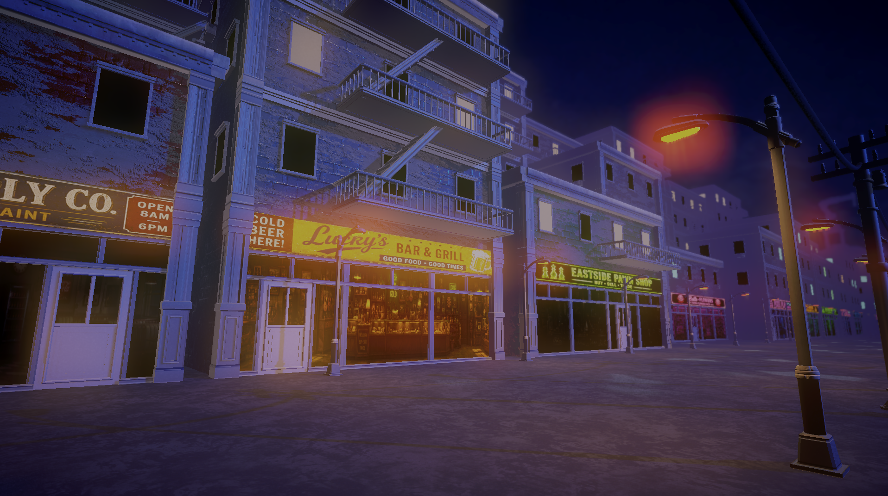
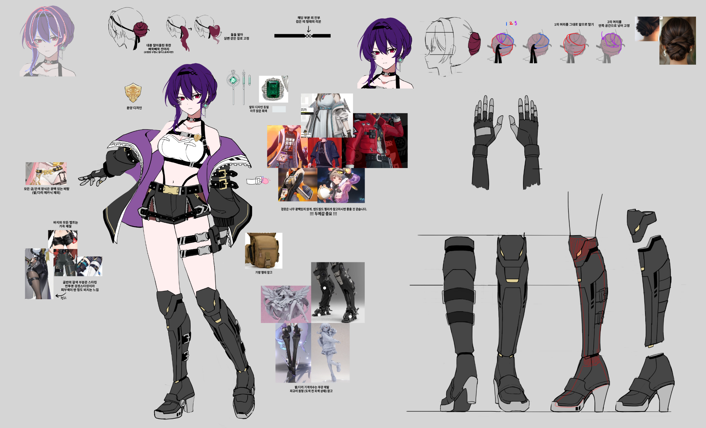
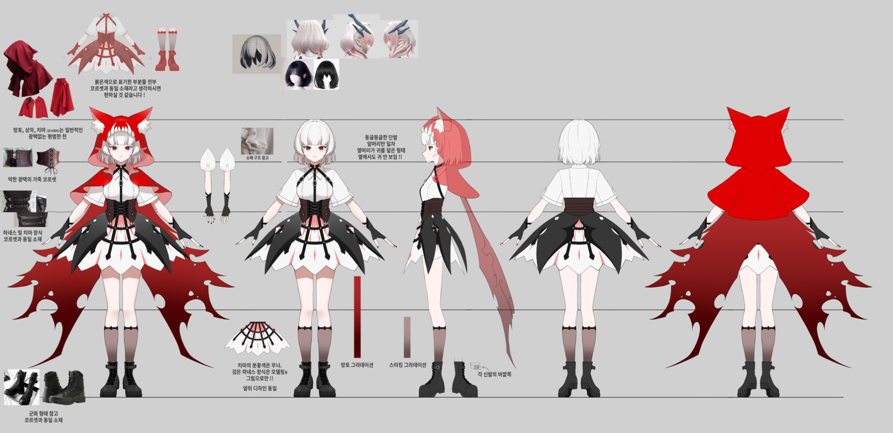

비와 네온의
범죄 동화
동화의 상징을 도시의 건축·간판·그래피티로 바꾼 2.5D 액션 세계.
01 · CONCEPT
9개의 동화가 9개의 범죄구역이 된 그림 시티. 수사관 도로시는 빨간 망토 루주후드와의 조우를 통해, 자신이 믿었던 ‘정의’의 균열을 마주합니다.
동화의 상징을 도시의 건축·간판·그래피티로 바꾼 2.5D 액션 세계.
챕터 1의 거리에서 전투와 웨이브를 돌파하고 보스전으로 진입합니다.
각 인물의 선택과 색을 통해 정의와 기억을 되묻는 이야기입니다.
02 · PLAY VIDEO
타이틀부터 거리 탐험, 전투, 컷신까지. 아래 장면을 누르면 영상을 바꿔 볼 수 있습니다.
01 · TITLE SEQUENCE
03 · ENVIRONMENT
거리 전경, 골목, 랜드마크, 상점 모듈, 조명과 그래피티까지. 챕터 1의 공간을 실제 게임 장면으로 전시합니다.

04 · CHARACTERS

진실을 보려는 수사관. 보라색은 끝내 마주해야 할 답을 암시합니다.

상실을 부정하고 계승한 자. 붉은 망토는 버릴 수 없는 현실입니다.
05 · GAME SYSTEMS
코드 목록이 아니라, 실제 플레이에서 확인할 수 있는 시스템 중심으로 정리했습니다.
이동 · 점프 · 낙하 · 대시 · 공격 · 패링 · 피격 · 회복 · 사망
Player FSM / Input System3개 슬롯 · 액티브/패시브 · 투사체 · 범위 공격 · 무기 비주얼
ScriptableObject · MVP 구조상태 전환 · 패턴 조합 · 공격 예고 · 그로기 · 카메라 흔들림
FSM + Behavior Tree근접형 · 원거리형 · 매복 원거리형 · 자폭 비행형
Ground / Flying AI체크포인트 · 회복 · 저장 · 리스폰 · 웨이브 디펜스 · 보스 포탈
Field → Boss Transition타이틀 · HUD · 스킬 장착 · 일시정지 · 레벨업 · 게임오버 · 페이드
Screen · Overlay · Popup